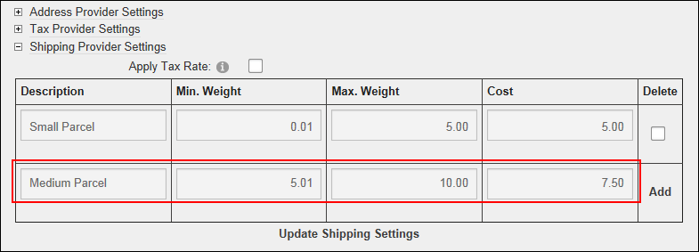
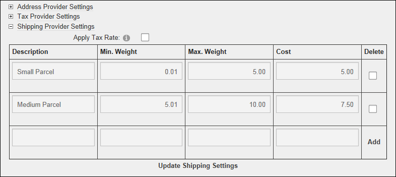
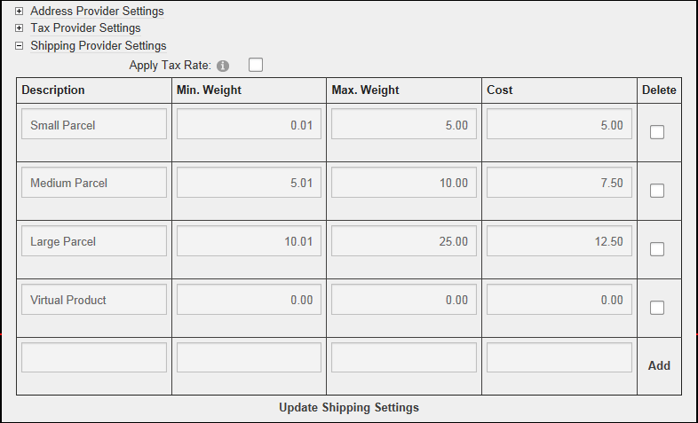

Adding Shipping Rates
How to add one or more shipping rates for the default shipping provider of the Store module. Different rates can be created for different weight ranges. Shipping rates are added to the price of orders at checkout.
"No Delivery" setting must be disabled to input shipping rates. See "Setting Store Info"
Tip: When adding weight and cost values for this tutorial, the fields are decimal values.
- Go to the Store Admin module.
- If the Store Info page isn't displayed, click the Store Info link.
- Maximize
 the Shipping Provider Settings section located at the bottom of the page.
the Shipping Provider Settings section located at the bottom of the page.
- In the Description text box, enter a description for this fee. E.g. Light Weight
- In the Min. Weight text box, enter the minimum weight of items within this shipping fee range as a decimal value. E.g. 0.01
- In the Max. Weight text box, enter the minimum weight of items within this shipping fee range as a decimal value. E.g. 5
- In the Cost text box, enter the cost for this shipping fee range as a decimal value. E.g. 5

- Click the Add link.The newly added shipping rate is now displayed in the Shipping Settings section and a new blank row is added allowing you to input further rates.

- Repeat Steps 4-8 to add additional rates.
Important. If virtual products are enabled on your store, you must create a shipping rate for a zero ( 0 ) weight range as shown below.
